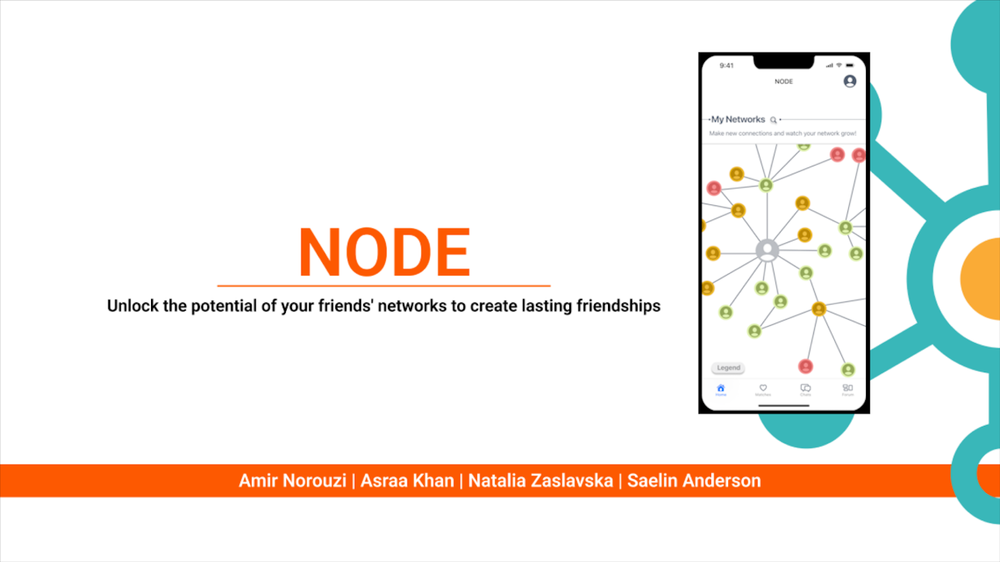

NODE - Friend Finder Community App
Group project aimed at creating an app idea to solve a real world problem.
NODE was designed to solve the issues of making friends while ensuring all users were authentic.
As a group, we brainstormed ideas over day one of the project to determine what problem to help address. Many sticky notes later, we chose the problem of making friends as adults.
The next step was verify our theory with data from interviews and see what possible solutions we could pursue.
Each member of the project conducted two user interviews.
The interviews revealed that while adults are willing to potentially meet new people, many did not trust online interactions due to the anonymity of the internet.
Analyzing the data from the user interviews, several points consistent were consistent among all the participants.
People wish to find others with similar interests but are concerned about the legitimacy of other users.
How might we build a platform where users can meet others with similar interests through their existing social circles?
The paper prototype was then quickly upgraded to a lo-fi version for testing. Each group member conducted 2 user tests.
The results from that gave valuable feedback and paved the way for the mid-fi prototype.
Sketch of an idea for NODE's launch screen.
Lo-Fi landing page screen.
Mid-Fi landing screen after several rounds of user testing and iterations.
At this point, the five weeks for the project were up and we wrapped up the project at the mid-fi stage.
This was a very fun project that gave me a good understanding of what goes into the UX of a project as well as what good teamwork accomplishes.